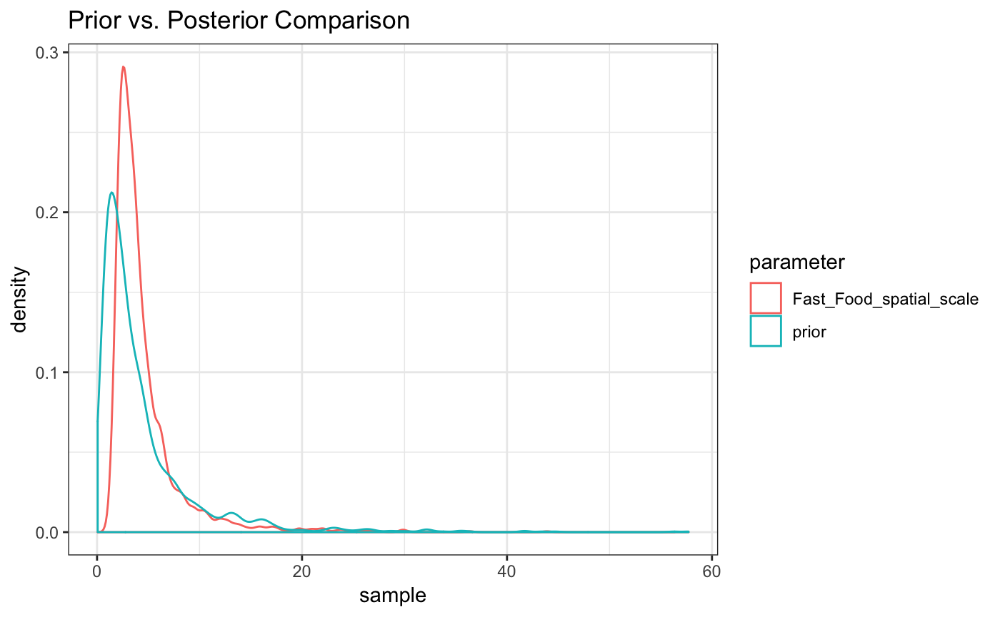

misspecified-kernel.RmdThe STAP framework requires a specified weight function, that desribes the rate at which the effect of the built environment feature either accumulates or decays across time or space respectively. This vignette explores and explains what happens when that weight function is mis-specified.
library(rstap)
library(dplyr)
#> Warning: package 'dplyr' was built under R version 3.5.1
library(tidyr)
library(ggplot2)num_subj <- 5E2
num_bef <- 50
sub_df <- data_frame(x = runif(n = num_subj, min = 1, max = 2.0),
y = runif(n = num_subj, min = 1, max = 2.0),
class = "Subject")
bef_df <- data_frame(x = runif(n = num_bef, min = 0, max = 3.0),
y = runif(n = num_bef, min = 0, max = 3.0),
class = "BEF")
rbind(sub_df,bef_df) %>% ggplot(aes(x=x,y=y,color = class)) + geom_point() +
theme_bw() + ggtitle("Subject, BEF Spatial Arrangement")alpha <- 24
Z <- rbinom(n = num_subj,size = 1,prob = .5)
delta <- -.8
beta <- .92
theta_FF <- 2.00
sigma <- 1.3
true_pars <- c(alpha,delta,beta,theta_FF)dists <- fields::rdist(as.matrix(sub_df[,c("x","y")]),
as.matrix(bef_df[,c("x","y")]))
unif_kernel <- function(x,theta) return( 1*(x<=theta) )
X <- apply(dists,1,function(x) sum(unif_kernel(x,theta_FF)))
X_tilde <- as.matrix(scale(X))
par(mfrow=c(1,2))
hist(dists)
hist(X)BMI <- alpha + Z*delta + X_tilde*beta + rnorm(n = num_subj,mean = 0,sd = sigma)
hist(BMI)We’ll now model these data in the rstap framework, but since rstap’s estimation engine uses HMC, we can’t use a weight function that has a step-function. Instead we’ll use the usual complementary error function.
subj_df <- sub_df %>% mutate(BMI = BMI,
sex = Z,
subj_id = 1:num_subj)
dist_df <- dists %>% as_data_frame() %>%
mutate(subj_id = 1:nrow(subj_df)) %>%
gather(contains("V"), key = 'BEF',value = 'Distance') %>%
mutate(BEF = 'Fast_Food')
fit <- stap_glm(formula = BMI ~ sex + sap(Fast_Food),
subject_data = subj_df,
distance_data = dist_df,
family = gaussian(link = 'identity'),
id_key = 'subj_id',
prior = normal(location = 0, scale = 5, autoscale = F),
prior_intercept = normal(location = 26.2, scale = 5, autoscale = F),
prior_stap = normal(location = 0, scale = 3, autoscale = F),
prior_theta = log_normal(location = 1, scale = 1),
prior_aux = cauchy(location = 0,scale = 5),
max_distance = max(dists), chains = 2, cores = 2)fit
#> stap_glm
#> family: gaussian [identity]
#> formula: BMI ~ sex + sap(Fast_Food)
#> observations: 500
#> Intercept: TRUE
#> fixed predictors:
#> spatial predictors: 1
#> temporal predictors: 0
#> ------
#> Median MAD_SD
#> (Intercept) 24.0 0.1
#> sex -0.8 0.1
#> Fast_Food 0.5 0.1
#> Fast_Food_spatial_scale 9.9 5.3
#>
#> Auxiliary parameter(s):
#> Median MAD_SD
#> sigma 1.5 0.0
#>
#> Sample avg. posterior predictive distribution of y:
#> Median MAD_SD
#> mean_PPD 23.6 0.1
#>
#> ------
#> * For help interpreting the printed output see ?print.stapreg
#> * For info on the priors used see ?prior_summary.stapregas.matrix(fit) %>% as_data_frame() %>%
mutate(prior = rlnorm(n=n(),meanlog = 1,sdlog = 1)) %>%
gather(everything(),key ='parameter',value = 'sample') %>%
filter(parameter%in%c("Fast_Food_spatial_scale","prior")) %>%
ggplot(aes(x=sample,color=parameter)) + geom_density() + theme_bw() +
ggtitle("Prior vs. Posterior Comparison")d <- seq(from = 0, to = max(dists), by = 0.01)
cerf_w <- pracma::erfc(d/coef(fit)[4])
unif_w <- unif_kernel(d,theta_FF)
par(mfrow=c(1,2))
plot(d,cerf_w, main = "Cerf Weight", type='l')
points(d,pracma::erfc(d/posterior_interval(fit,regex_pars = 'scale')[1]),col='red', type = 'l',lty=2)
points(d,pracma::erfc(d/posterior_interval(fit,regex_pars = 'scale')[2]),col='red', type = 'l',lty=2)
plot(d,unif_w, main = "Unif Weight", type='l')For a different, more closely related weight function, the discrepancy might not be as bad.
X <- apply(dists,1,function(x) sum(exp(-x/theta_FF)) )
X_tilde <- as.matrix(scale(X))
par(mfrow=c(1,2))
hist(X)
hist(X_tilde)subj_df$BMI <- as.vector(alpha + Z*delta + X_tilde*beta + rnorm(n = num_subj,mean = 0,sd = sigma))
fit <- stap_glm(formula = BMI ~ sex + sap(Fast_Food),
subject_data = subj_df,
distance_data = dist_df,
family = gaussian(link = 'identity'),
id_key = 'subj_id',
prior = normal(location = 0, scale = 5, autoscale = F),
prior_intercept = normal(location = 26.2, scale = 5, autoscale = F),
prior_stap = normal(location = 0, scale = 3, autoscale = F),
prior_theta = log_normal(location = 1, scale = 1),
prior_aux = cauchy(location = 0,scale = 5),
max_distance = max(dists), chains = 2, cores = 2)as.matrix(fit) %>% as_data_frame() %>%
mutate(prior = rlnorm(n=n(),meanlog = 1,sdlog = 1)) %>%
gather(everything(),key ='parameter',value = 'sample') %>%
filter(parameter%in%c("Fast_Food_spatial_scale","prior")) %>%
ggplot(aes(x=sample,color=parameter)) + geom_density() + theme_bw() +
ggtitle("Prior vs. Posterior Comparison")d <- seq(from = 0, to = max(dists), by = 0.01)
cerf_w <- pracma::erfc(d/coef(fit)[4])
exp_w <- exp(-d/theta_FF)
plot(d,cerf_w, main = "Cerf Weight", type='l')
points(d,pracma::erfc(d/posterior_interval(fit,regex_pars = 'scale')[1]),col='red', type = 'l', lty = 2)
points(d,pracma::erfc(d/posterior_interval(fit,regex_pars = 'scale')[2]),col='red', type = 'l', lty = 2)
points(d,exp_w, main = "Exponential Weight", type='l',col='blue',lty=3, lwd = 2)fit <- stap_glm(formula = BMI ~ sex + sap(Fast_Food,exp),
subject_data = subj_df,
distance_data = dist_df,
family = gaussian(link = 'identity'),
id_key = 'subj_id',
prior = normal(location = 0, scale = 5, autoscale = F),
prior_intercept = normal(location = 26.2, scale = 5, autoscale = F),
prior_stap = normal(location = 0, scale = 3, autoscale = F),
prior_theta = log_normal(location = 1, scale = 1),
prior_aux = cauchy(location = 0,scale = 5),
max_distance = max(dists), chains = 2, cores = 2)as.matrix(fit) %>% as_data_frame() %>%
mutate(prior = rlnorm(n=n(),meanlog = 1,sdlog = 1)) %>%
gather(everything(),key ='parameter',value = 'sample') %>%
filter(parameter%in%c("Fast_Food_spatial_scale","prior")) %>%
ggplot(aes(x=sample,color=parameter)) + geom_density() + theme_bw() +
ggtitle("Prior vs. Posterior Comparison")
d <- seq(from = 0, to = max(dists), by = 0.01)
est_w <- exp(-d/coef(fit)[4])
exp_w <- exp(-d/theta_FF)
plot(d,est_w, main = "Correct Model", type='l')
points(d,exp(-d/posterior_interval(fit,regex_pars = 'scale')[1]),col='red', type = 'l', lty = 2)
points(d,exp(-d/posterior_interval(fit,regex_pars = 'scale')[2]),col='red', type = 'l', lty = 2)
points(d,exp_w, type='l',col='blue',lty=3, lwd = 2)